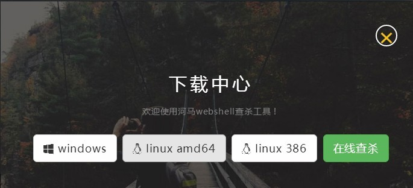
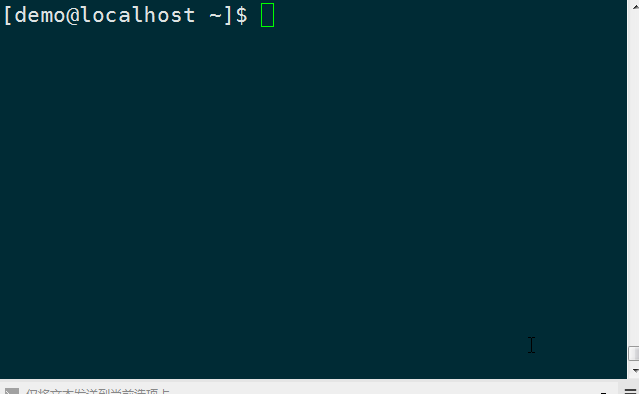

本教程适用于linux服务器环境的安装使用;windows版本教程查看这里
下载
访问https://www.shellpub.com官方网站
点击【立即使用】进入下载中心

选择适合您的版本
linux 64位选择 linux amd64
linux 32位选择 linux 386
可以使用wget进行下载，在按钮上【鼠标右键】->【复制链接地址】
下载64位版本
wget -O /opt/hm-linux.tgz http://dl.shellpub.com/hm/latest/hm-linux-amd64.tgz?version=1.7.0
下载32位版本
wget -O /opt/hm-linux.tgz http://dl.shellpub.com/hm/latest/hm-linux-386.tgz?version=1.7.0
以上路径会随着版本更新而变化，请从下载中心获取最新版本
河马webshell查杀推荐您使用XShell作为ssh客户端，XShell有面向个人学校、教育的免费版本
解压缩
linux压缩包格式是tgz格式的，使用tar gz解压缩
以64位程序为例
cd /opt/
tar xvf hm-linux.tgz
注意:
不要将本软件放置到web目录下
不要在web目录下运行软件
使用

4.1 查看帮助
cd /opt/
./hm -h
4.2 查看版本
./hm version
4.3 扫描后门
./hm scan 你的web目录
扫描完成之后结果会保存为result.csv文件，使用记事本或者excel打开查看
./hm deepscan 你的web目录
扫描时开启深度解码
4.4 升级
./hm update
如果你已经将hm添加到PATH环境变量中，则可以不用./hm而直接是用hm
FAQ
5.1 无法连接到云服务
本产品采用本地+云端双引擎，需要联网之后才能准确查杀；请检查您的网络是否能访问云服务，可以在命令行中执行curl https://api.shellpub.com/v2/version, 如果返回正常结果说明您的系统时间未同步，请先同步系统时间；如果返回报错，可能是您系统PKI证书老旧，请升级ca
为什么不能在web目录下使用本软件
本软件扫描完成之后会在运行的工作目录下生成扫描结果；如果在web目录下生成结果，则会被黑客下载，黑客就可以通过您服务器上已有后门获取服务器权限。
为什么扫描速度很慢
正常的扫描速度大约是每秒钟200~300个文件如果远慢于这个速度则可能有异常。1.请检查您的网络是否正常，本软件扫描时需要连接到云查杀引擎；2.可能被杀毒软件拦截，请将本软件的路径添加到杀毒软件白名单中
如何查看我的系统是32位的还是64位的
如果您使用的linux系统但不确定是32位的还是64位的可以使用以下命令arch来查看
x86_64 就是64位系统，请点击下载linux amd64
x86 就是32位系统，请点击linux 386
如果您的linux系统没有安装arch，可以使用uname -r命令来查看
如果您在使用过程中遇到了困难，或者有好的建议反馈给我们。可以通过以下方式联系我们：
QQ:1494922137
service@shellpub.com